How to Solve — Loop Puzzles
Every solving technique the Hint button knows across Masyu, Slitherlink, Mid-loop, Castle Wall, Hamilton cycle, and Hybrids. Click any diagram to open that exact puzzle in the app.
Rules at a glance
Every puzzle shares one core goal: draw one single closed loop along the grid lines with no crossings or branches. Jump directly to any puzzle family:
Loop fundamentals
These universal techniques work identically on every puzzle family. A puzzle’s difficulty tier (Beginner, Medium, Hard, or Expert) comes from the hardest required rule across both loop fundamentals and puzzle-specific techniques.
Bookkeeping
5 core bookkeeping rules cost 1 each and run automatically before each hint step so the board stays tidy:
edgesOffCellOff(cost 1): A segment touching an off-loop cell is off.edgeEnds(cost 1): A segment puts both of its cells on the loop.fullCell(cost 1): A cell with two segments takes no more.isolatedCellOff(cost 1): A cell with all its edges off is not on the loop.closedLoopRestOff(cost 1): Once the single loop is closed, all remaining cells are off the loop.
Beginner
A puzzle is rated Beginner when its hardest required step is in this tier: direct local deductions — basic clue rules, dead ends, forced exits, and not closing the loop early.
deadEnd
An empty cell with fewer than two exits left cannot be on the loop.
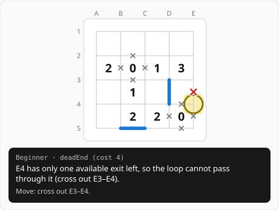
ARMORY-20 (5×5, after 4 earlier hints). Click the picture to open this puzzle in the app.
Hint says: "A5 has only one available exit left, so the loop cannot pass through it (cross out A5–B5)."
forcedExits
A loop cell with only two exits left must use both.

ARMORY-15 (5×5, after 6 earlier hints). Click the picture to open this puzzle in the app.
Hint says: "A1 is on the loop and has only two exits left, so it must use A1–B1."
noEarlyClose
A segment joining the two ends of one path would close the loop early.
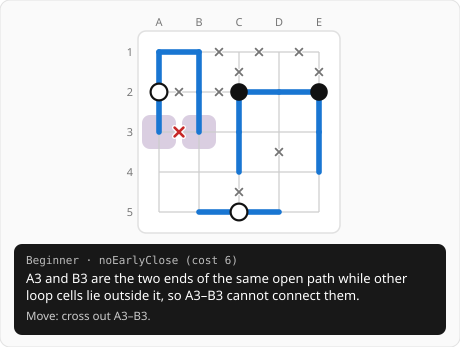
ARMORY-22 (6×6, after 15 earlier hints). Click the picture to open this puzzle in the app.
Hint says: "D5 and D6 are the two ends of the same open path while other loop cells lie outside it, so D5–D6 cannot connect them."
Medium
A puzzle is rated Medium when its hardest required step is in this tier: multi-step local patterns, basic border-anchored Inside/Outside shading, and 1-step local lookahead.
closingCell
An empty cell whose only two exits meet one path cannot be on the loop.
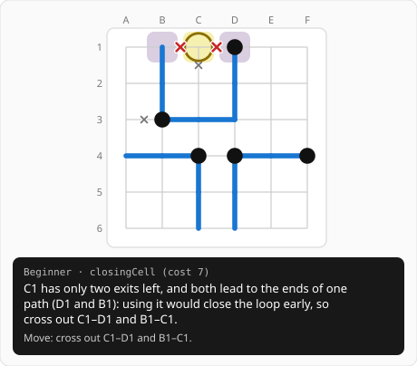
ARMORY-22 (6×6, after 17 earlier hints). Click the picture to open this puzzle in the app.
Hint says: "E3 has only two exits left, and both lead to the ends of one path (E4 and D3): using it would close the loop early, so cross out E3–E4 and D3–E3."
samePathExits
A loop cell with three exits where two meet one path must use the third.

ARMORY-32 (8×8, after 6 earlier hints). Click the picture to open this puzzle in the app.
Hint says: "G7 is on the loop with three exits, and two of them (H7 and G8) lead to the ends of one path; using both would close the loop early, so it must take G6–G7."
faceShade
Basic inside/outside shading (crossing lines and X marks from the border) puts known colors on both sides of an edge.

ARMORY-41 (10×10, after 45 earlier hints). Click the picture to open this puzzle in the app.
Hint says: "Inside/outside shading puts Outside on both sides of J4–J5, so the loop cannot pass between them (cross out J4–J5)."
boxStrand
Closing two active corners of a 2×2 square cannot seal off both escapes of an open end on the opposite side.

ARMORY-43 (6×20, after 62 earlier hints). Click the picture to open this puzzle in the app.
Hint says: "Drawing C10–D10 would fill both C10 and D10, sealing both escapes of the adjacent pair C9–D9 and stranding the open end at C9; so cross out C10–D10."
imagineLocal
Imagine a segment on or off at a circle or open end: one local step immediately breaks a rule.

ARMORY-52 (7×7, after 18 earlier hints). Click the picture to open this puzzle in the app.
Hint says: "Imagine a segment at C2–D2: then the Mid-loop dot at C2 must extend symmetrically horizontally; and finally the Mid-loop dot at B3 has no valid symmetric straight segment. So cross out C2–D2."
Hard
A puzzle is rated Hard when its hardest required step is in this tier: clue-powered Inside/Outside shading, global loop topology (corridors, chokepoints, parity), symmetry, and short single-thread lookahead.
corridorNoEarlyClose
A forced multi-cell corridor joining the two ends of one path would close the loop early.

ARMORY-44 (7×7, after 12 earlier hints). Click the picture to open this puzzle in the app.
Hint says: "The forced corridor (G1 and F1) only connects the two ends of one open path (G2 and F2) while other loop cells lie outside it: entering it would close the loop early, so cross out G1–G2, F1–G1, and F1–F2."
faceCircle
Advanced inside/outside shading (white-circle or Mid-loop diagonals, black 3-to-1 corners, or relative coloring) forces an edge.

ARMORY-41 (10×10, after 41 earlier hints). Click the picture to open this puzzle in the app.
Hint says: "Circle shading: crossing line B1–C1 makes B1–C2 Inside; flipping diagonally across white circle B2 makes A2–B3 Outside. That puts Outside on both sides of A2–A3, so cross out A2–A3."
twoEndsJoin
A sealed area with just two open ends must connect them, so their far ends cannot join early.

ARMORY-47 (7×7, after 26 earlier hints). Click the picture to open this puzzle in the app.
Hint says: "The highlighted area has only two open ends (D1 and D2), so they must connect inside it; that makes B1 and B2 ends of one path, so B1–B2 cannot close them early."
chokepoint
Blocking this segment would cut off a small area or leave a single chokepoint cell.

ARMORY-48 (8×8, after 47 earlier hints). Click the picture to open this puzzle in the app.
Hint says: "Without E1–F1, B3 would be the only cell connecting the highlighted area to the rest of the loop (a single loop cannot pass through it twice), so E1–F1 must be drawn."
parityPocket
The other choice would seal off a small pocket with an odd number of open ends.

ARMORY-48 (8×8, after 46 earlier hints). Click the picture to open this puzzle in the app.
Hint says: "If you tried drawing C3–C4, the highlighted area would be sealed off with 3 open ends (odd, so they can't all pair up); therefore cross out C3–C4."
imagineTrace
Imagine a segment on or off and trace one single thread 2–3 steps ahead until something breaks.
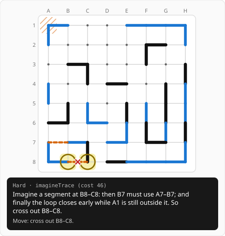
ARMORY-53 (10×10, after 57 earlier hints). Click the picture to open this puzzle in the app.
Hint says: "Imagine a segment at G8–G9: then the black circle at H8 is blocked left and goes two cells right; then I9 becomes a dead end; then H9 becomes a dead end; and finally G9 is left with only one way out. So cross out G8–G9."
crossingParity
The loop crosses the border of any rectangle or band an even number of times.
No puzzle in the current corpus needed this rule as its cheapest next hint yet (cheaper rules resolved those positions first).
chokepointArea
Blocking this segment would cut off a large area or leave a single chokepoint cell.
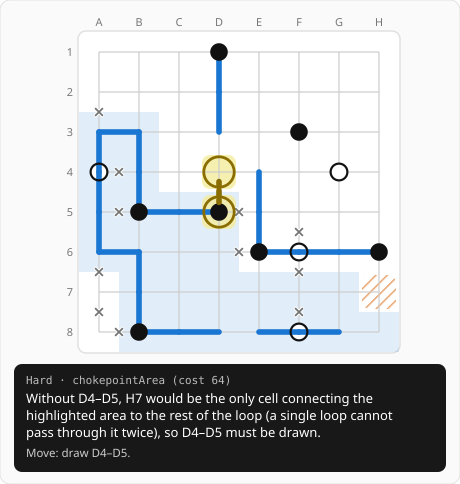
ARMORY-41 (10×10, after 43 earlier hints). Click the picture to open this puzzle in the app.
Hint says: "Without G3–H3, J5 would be the only cell connecting the highlighted area to the rest of the loop (a single loop cannot pass through it twice), so G3–H3 must be drawn."
parityForces
The other choice would seal off an area with an odd number of open ends.

ARMORY-49 (10×10, after 53 earlier hints). Click the picture to open this puzzle in the app.
Hint says: "If you tried drawing E3–E4, the highlighted area would be sealed off with 5 open ends (odd, so they can't all pair up); therefore cross out E3–E4."
symmetry
A puzzle with exact symmetry and a unique solution must have a symmetric loop.

ARMORY-50 (6×6, after 17 earlier hints). Click the picture to open this puzzle in the app.
Hint says: "Because this puzzle has top-bottom mirror symmetry and a unique solution, the single loop must cross the mirror axis exactly twice (2 crossings already known), so cross out 4 edges."
Expert
A puzzle is rated Expert when its hardest required step is in this tier: longer multi-front or area-parity lookahead chains and trial-and-contradiction deductions.
imagineChain
Imagine a segment on or off and follow a long, multi-front, or area-parity chain until something breaks.
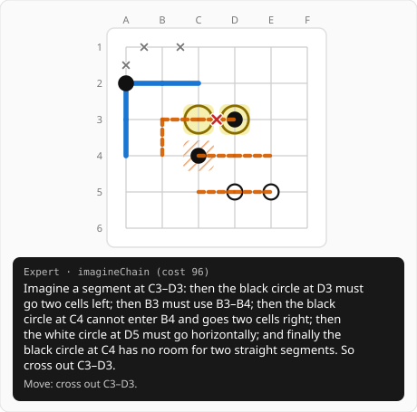
ARMORY-54 (7×7, after 14 earlier hints). Click the picture to open this puzzle in the app.
Hint says: "Imagine no segment at A5–B5: then A5 becomes a dead end; then the 1↓ clue at A3 needs all of its remaining open segments; then A6 must use A6–B6; then A7 must use A7–B7; then B6–B7 cannot close the loop early; then B7 must use B7–C7; then the 2↓ clue at C3 needs all of its remaining open segments; and finally the Castle Wall clue at F5 cannot reach 2 segments along its ray. So draw A5–B5."
tryEdge
Trying a segment one way leads to a contradiction.

ARMORY-51 (8×8, after 30 earlier hints). Click the picture to open this puzzle in the app.
Hint says: "Imagine a segment at C6–C7 and follow the forced deductions (starting with: the white circle at C7 must go vertically; then the 2↓ clue at C2 already has 2 segments, so the rest of its ray is off; then C3 becomes a dead end; then B3 must use B3–B4; reaching a contradiction after 18 steps). So cross out C6–C7."
⚪ Masyu
White circles (○): pass straight through and turn 90° at least once at an adjacent intersection. Black circles (●): turn 90° at the circle and go straight for at least two segments in both exit directions.
whiteStraight
A white circle blocked on one axis goes straight along the other.

ARMORY-14 (5×5, the empty board). Click the picture to open this puzzle in the app.
Hint says: "The white circle at C1 cannot go vertically, so the loop must go straight horizontally through it."
blackExtend
A black circle continues straight two cells from an existing segment and turns away from the opposite side.

ARMORY-15 (5×5, after 2 earlier hints). Click the picture to open this puzzle in the app.
Hint says: "The black circle at A3 leaves up, so it must go straight two cells up and cannot exit down."
blackWall
A black circle blocked within two cells of a wall or cross must extend two cells the opposite way.

ARMORY-16 (5×5, the empty board). Click the picture to open this puzzle in the app.
Hint says: "The black circle at B3 is too close to the left edge to go two straight cells left, so it must go two cells right."
blackAdjacent
Two touching black circles cannot connect, so each extends two cells away from the other.

ARMORY-18 (8×8, after 7 earlier hints). Click the picture to open this puzzle in the app.
Hint says: "The touching black circles at D3 and D4 cannot connect (each must go straight through its neighbor), so D3 goes two cells up."
whiteMustTurn
A white circle that goes straight at one end must turn at the other.

ARMORY-19 (5×5, after 5 earlier hints). Click the picture to open this puzzle in the app.
Hint says: "The white circle at C2 goes straight through D2, so the loop must turn at B2 (cross out A2–B2)."
blackPerp
A black circle cannot enter a neighbor that already has a perpendicular segment.
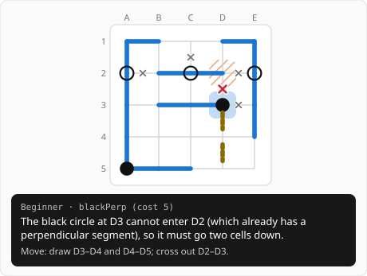
ARMORY-21 (5×5, after 6 earlier hints). Click the picture to open this puzzle in the app.
Hint says: "The black circle at C3 cannot enter B3 (which already has a perpendicular segment), so it must go two cells right."
threeWhites
Three white circles in a row must all cross perpendicular to the row.

ARMORY-20 (5×5, after 9 earlier hints). Click the picture to open this puzzle in the app.
Hint says: "Three white circles in a row (D2, C2, and B2) cannot go along the row because the middle circle would fail to turn at either end; all three must cross vertically."
whiteBothStraight
A white circle cannot use an axis where both neighbors already continue straight.
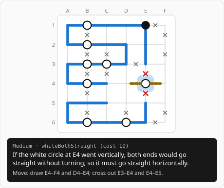
ARMORY-31 (6×6, after 22 earlier hints). Click the picture to open this puzzle in the app.
Hint says: "If the white circle at E4 went vertically, both ends would go straight without turning; so it must go straight horizontally."
twoWhitesStraight
Two touching white circles with a straight segment entering one cannot connect, so both cross perpendicular.
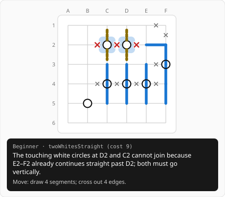
ARMORY-33 (8×8, after 23 earlier hints). Click the picture to open this puzzle in the app.
Hint says: "The touching white circles at E4 and F4 cannot join because C4–D4 already continues straight past E4; both must go vertically."
whiteNoTurnAxis
A white circle cannot use an axis whose two neighbors are both unable to turn.
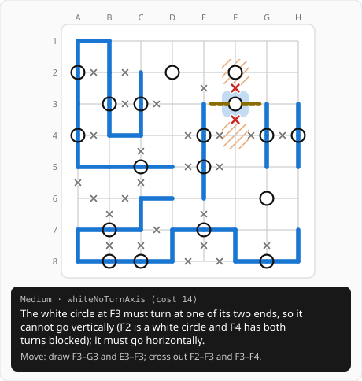
ARMORY-35 (8×8, after 34 earlier hints). Click the picture to open this puzzle in the app.
Hint says: "The white circle at F3 must turn at one of its two ends, so it cannot go vertically (F2 is a white circle and F4 has both turns blocked); it must go horizontally."
blackNoEarlyClose
A black circle cannot extend two cells into the other end of its own path and close the loop early.
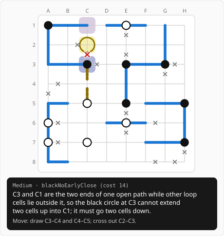
ARMORY-36 (8×8, after 22 earlier hints). Click the picture to open this puzzle in the app.
Hint says: "C3 and C1 are the two ends of one open path while other loop cells lie outside it, so the black circle at C3 cannot extend two cells up into C1; it must go two cells down."
blackBlockedTarget
A black circle cannot extend toward a circle two cells away that cannot accept a straight segment.
No puzzle in the current corpus needed this rule as its cheapest next hint yet (cheaper rules resolved those positions first).
blackTwoDiagWhites
A black circle flanked by two diagonally adjacent white circles cannot extend between them.

ARMORY-37 (8×8, after 20 earlier hints). Click the picture to open this puzzle in the app.
Hint says: "The black circle at F3 cannot send a ray right between the two diagonal white circles at G4 and G2 (doing so would block whichever side its second leg takes); so it must go two cells left."
blackWhiteNoTurn
A black circle cannot extend into a white circle two cells away whose far side cannot turn.

ARMORY-38 (8×8, after 13 earlier hints). Click the picture to open this puzzle in the app.
Hint says: "The black circle at G3 cannot extend into the white circle at G5 because G6 already continues straight, leaving G5 unable to turn on either side; so G3 must go two cells up."
whiteCornerPinch
A two-exit corner diagonally next to a white circle cannot pinch both of its already-active neighbors.

ARMORY-39 (8×8, after 16 earlier hints). Click the picture to open this puzzle in the app.
Hint says: "G6 has only two exits left, pointing to F6 and G5, which both already have a segment; passing through G6 would fill both neighbors and cut off the white circle at F5 on both axes, so cross out F6–G6 and G5–G6."
whiteDeadEndPinch
A segment completing two sides of a 2×2 square beside a white circle cannot pinch both of its axes.

ARMORY-40 (8×8, after 30 earlier hints). Click the picture to open this puzzle in the app.
Hint says: "Drawing B2–C2 would fill both C2 and B2, turning B3 into a dead end and cutting off the white circle at C3 on both axes; so cross out B2–C2."
Gray circles
Each gray circle is secretly either a white or a black circle — figuring out which is part of the puzzle. Tap a gray circle in the app to label it as an optional note.
- Bookkeeping:
grayFromShape(cost 1): A gray circle with two drawn segments resolves to white (straight) or black (turn).
grayMustBeBlack
A gray circle that cannot go straight along either axis must be black.

ARMORY-13 (8×8, the empty board). Click the picture to open this puzzle in the app.
Hint says: "The gray circle at A8 is in a corner and cannot go straight through, so it cannot be white — it must be a black circle."
grayMustBeWhite
A gray circle that cannot extend two straight segments along both axes must be white.
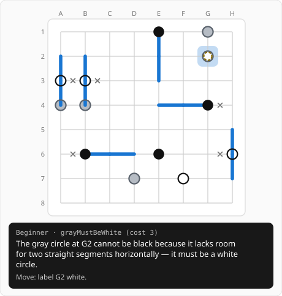
ARMORY-17 (8×8, after 2 earlier hints). Click the picture to open this puzzle in the app.
Hint says: "The gray circle at H6 cannot be black because it lacks room for two straight segments horizontally — it must be a white circle."
grayWhiteNoTurn
A gray circle that cannot make a valid white-circle turn on either axis must be black.

ARMORY-34 (8×8, after 22 earlier hints). Click the picture to open this puzzle in the app.
Hint says: "If the gray circle at F4 were white, it could not make a required 90° turn on either axis; so it must be a black circle."
🔢 Slitherlink
Each number 0–3 sits inside a grid square and tells how many of that square’s four sides belong to the single closed loop (blank squares can have any number of sides).
slitherZero
A 0 square has no loop segments around it.

ARMORY-01 (5×5, the empty board). Click the picture to open this puzzle in the app.
Hint says: "The 0 square at A4–B5 cannot touch any loop segments — cross out 4 edges."
slitherCount
A numbered square whose remaining edges match its count must fill or cross them out.
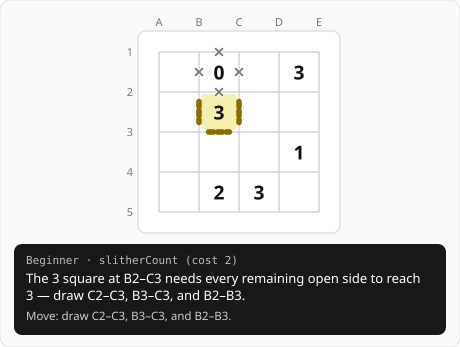
ARMORY-02 (5×5, after 1 earlier hint). Click the picture to open this puzzle in the app.
Hint says: "The 3 square at D2–E3 needs every remaining open side to reach 3 — draw D2–E2, E2–E3, and D3–E3."
slitherCorner
A 3 or 1 at a blocked corner forces both of its corner sides on (for 3) or off (for 1).
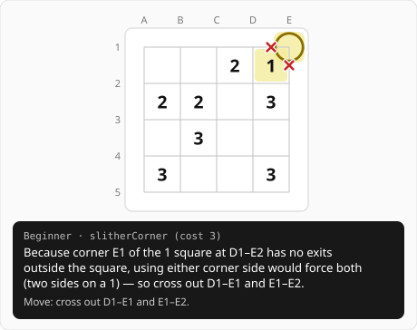
ARMORY-03 (5×5, the empty board). Click the picture to open this puzzle in the app.
Hint says: "Because corner E1 of the 1 square at D1–E2 has no exits outside the square, using either corner side would force both (two sides on a 1) — so cross out D1–E1 and E1–E2."
slitherAdjacent3
Two orthogonally adjacent 3s force three parallel segments and cross out the shared-vertex extensions.
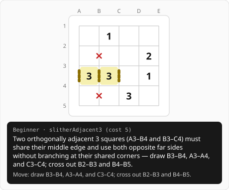
ARMORY-04 (5×5, the empty board). Click the picture to open this puzzle in the app.
Hint says: "Two orthogonally adjacent 3 squares (A3–B4 and B3–C4) must share their middle edge and use both opposite far sides without branching at their shared corners — draw B3–B4, A3–A4, and C3–C4; cross out B2–B3 and B4–B5."
slitherDiag3
Two diagonally adjacent 3s force both outer corners on.

ARMORY-04 (5×5, after 1 earlier hint). Click the picture to open this puzzle in the app.
Hint says: "The diagonal 3 squares at B3–C4 and C4–D5 cannot both turn sharply around their shared corner C4, so each must use both of its outer sides — draw B3–C3, D4–D5, and C5–D5."
slitherLineIn
A segment entering a corner of a square with one spare side (e.g. a 3, or a 2 with one X) forces its other open sides on and blocks the other exit.
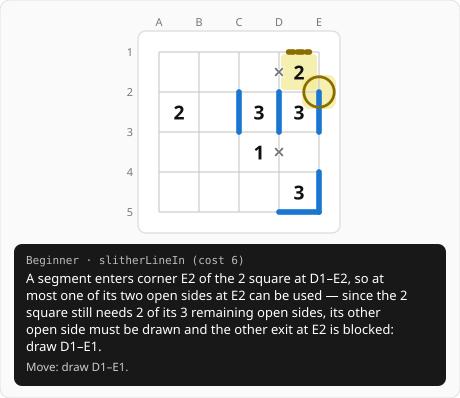
ARMORY-05 (5×5, after 2 earlier hints). Click the picture to open this puzzle in the app.
Hint says: "A segment enters corner E2 of the 2 square at D1–E2, so at most one of its two open sides at E2 can be used — since the 2 square still needs 2 of its 3 remaining open sides, its other open side must be drawn and the other exit at E2 is blocked: draw D1–E1."
slitherCorner2
A 2 at a blocked corner couples its two corner sides (both on or both off), forcing exits at its adjacent corners.
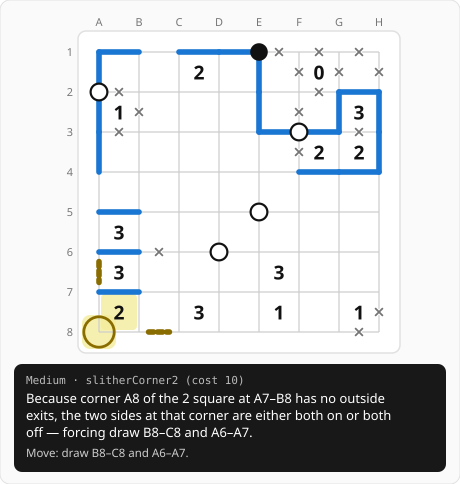
ARMORY-23 (8×8, after 15 earlier hints). Click the picture to open this puzzle in the app.
Hint says: "Because corner C5 of the 2 square at B4–C5 has no outside exits, the two sides at that corner are either both on or both off — forcing draw C3–C4."
slither1LineIn
A segment forced into a corner of a 1 crosses out its two opposite sides.

ARMORY-23 (8×8, after 10 earlier hints). Click the picture to open this puzzle in the app.
Hint says: "The segment at F8 must continue along one of the 1 square's two adjacent sides at E7–F8, using up its single segment — so its two opposite sides are off: cross out E7–F7 and E7–E8."
slitherDiag32
A diagonal chain of 2s between two 3s forces both outer corners on.
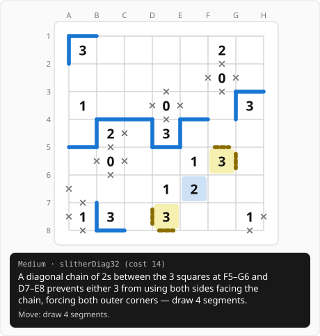
ARMORY-26 (8×8, after 16 earlier hints). Click the picture to open this puzzle in the app.
Hint says: "A diagonal chain of 2s between the 3 squares at F5–G6 and D7–E8 prevents either 3 from using both sides facing the chain, forcing both outer corners — draw 4 segments."
faceSlither
Inside/outside shading around numbered Slitherlink squares (and circles on hybrids) forces an edge.
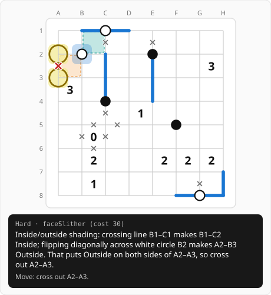
ARMORY-46 (8×8, after 38 earlier hints). Click the picture to open this puzzle in the app.
Hint says: "Inside/outside shading: crossing line A1–B1 makes A1–B2 Inside; the 3 square A1–B2 makes B1–C2 Outside. That puts Outside on both sides of B1–C1, so cross out B1–C1."
🎯 Mid-loop
Every teal dot sits either on an intersection (even straight run: 2, 4, …) or on a segment midpoint (odd straight run: 1, 3, …). The single closed loop must pass straight through every teal dot with equal straight lengths on both sides up to the 90° turns at each end. Because intersection dots always go straight through, diagonal Inside/Outside shading (faceCircle) also applies to them.
midEdgeDot
A Mid-loop dot on a grid segment puts that segment on the loop.
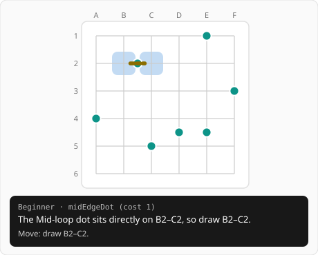
ARMORY-06 (6×6, the empty board). Click the picture to open this puzzle in the app.
Hint says: "The Mid-loop dot sits directly on D1–E1, so draw D1–E1."
midVertexAxis
A Mid-loop dot on an intersection whose one direction is blocked goes straight the other way.
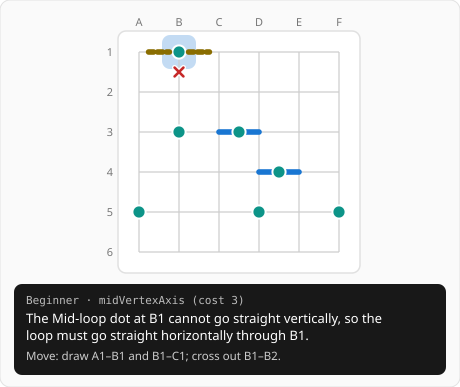
ARMORY-07 (6×6, after 2 earlier hints). Click the picture to open this puzzle in the app.
Hint says: "The Mid-loop dot at B1 cannot go straight vertically, so the loop must go straight horizontally through B1."
midSymExtend
When a Mid-loop straight segment extends further on one side, extend the opposite side to match.
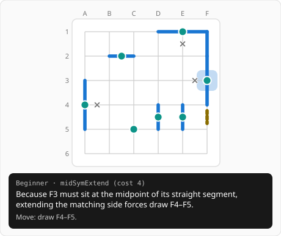
ARMORY-08 (6×6, after 7 earlier hints). Click the picture to open this puzzle in the app.
Hint says: "Because F3 must sit at the midpoint of its straight segment, extending the matching side forces draw F4–F5."
midSymCap
When one side of a Mid-loop segment must turn, the matching distance on the opposite side must also turn.
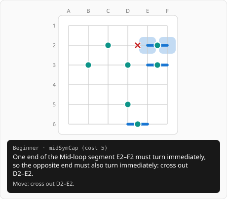
ARMORY-09 (6×6, after 3 earlier hints). Click the picture to open this puzzle in the app.
Hint says: "One end of the Mid-loop segment E2–F2 must turn immediately, so the opposite end must also turn immediately: cross out D2–E2."
midLengthForce
Eliminating impossible stop lengths along a Mid-loop dot forces its straight run to extend or turn.
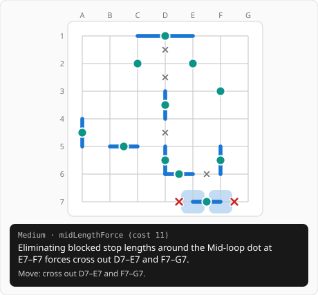
ARMORY-27 (7×7, after 10 earlier hints). Click the picture to open this puzzle in the app.
Hint says: "Eliminating blocked stop lengths around the Mid-loop dot at E7–F7 forces cross out D7–E7 and F7–G7."
midVertexParity
An intersection Mid-loop dot with no valid symmetric length along one axis runs along the other.
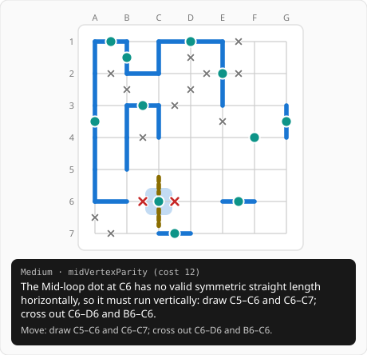
ARMORY-28 (7×7, after 12 earlier hints). Click the picture to open this puzzle in the app.
Hint says: "The Mid-loop dot at F6 has no valid symmetric straight length vertically, so it must run horizontally: draw E6–F6 and F6–G6; cross out F5–F6 and F6–F7."
🏰 Castle Wall
Blocked wall tiles cannot be entered by the loop. White walls must lie Inside the loop, black walls must lie Outside the loop, and gray walls may lie on either side. Each numbered arrow counts the total number of loop segments running parallel to the arrow from that tile all the way to the board edge (looking past any other wall tiles). White and black walls automatically anchor Inside/Outside shading (faceShade).
castleZero
A 0 arrow crosses out every parallel segment along its ray.
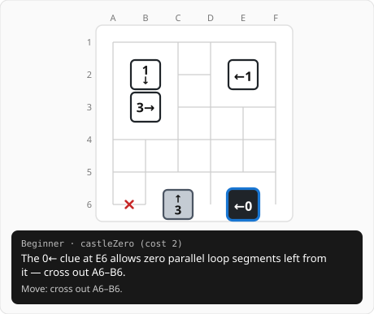
ARMORY-10 (6×6, the empty board). Click the picture to open this puzzle in the app.
Hint says: "The 0← clue at E6 allows zero parallel loop segments left from it — cross out A6–B6."
castleCount
A numbered arrow whose open segments match its count fills or crosses out the rest of its ray.
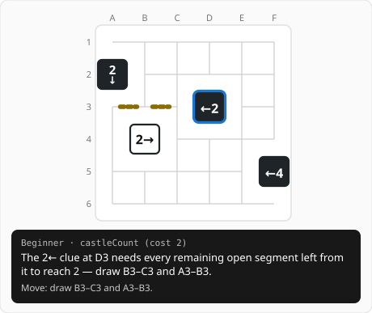
ARMORY-11 (6×6, the empty board). Click the picture to open this puzzle in the app.
Hint says: "The 2← clue at D3 needs every remaining open segment left from it to reach 2 — draw B3–C3 and A3–B3."
castleWallEdge
An edge directly separating a white (inside) wall from the border or a black (outside) wall must be drawn, while same-color gaps are crossed out.
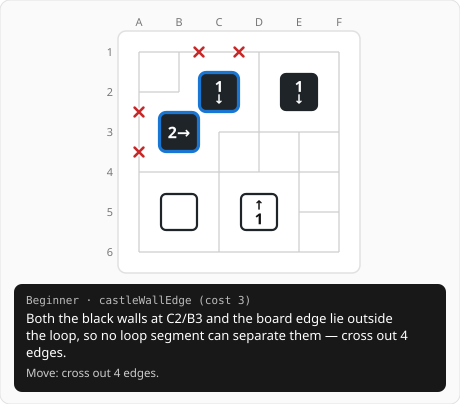
ARMORY-12 (6×6, the empty board). Click the picture to open this puzzle in the app.
Hint says: "The white wall at B2 must lie inside the loop while the board edge is outside, so the loop must pass between them — draw 6 segments."
castleRayDiff
Two same-direction arrows in the same row or column pin the exact segment count in the gap between them.
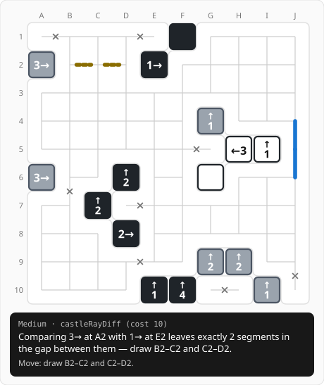
ARMORY-29 (10×10, after 13 earlier hints). Click the picture to open this puzzle in the app.
Hint says: "Both 3← at J4 and 3← at G4 count the same total left, so there can be zero segments in the gap between them — cross out H4–I4."
castleRayBound
Coupled straight corridors and forced turns along an arrow ray bound which segments can fit its count.
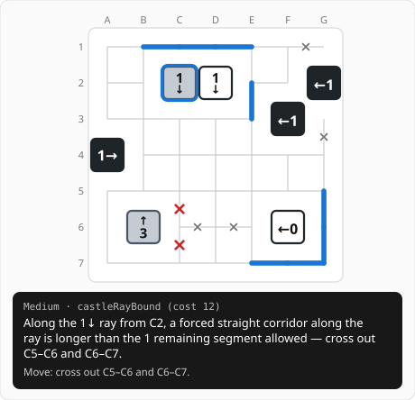
ARMORY-30 (7×7, after 4 earlier hints). Click the picture to open this puzzle in the app.
Hint says: "Along the 3↓ ray from E2, turn limits along the ray leave zero spare capacity to reach 3 remaining segments — draw E3–E4 and E6–E7."
🔁 Hamilton cycle
The loop must visit every active intersection dot on the grid (none may be left empty). Dark pre-filled segments and bold ✕ walls are permanent givens.
checkerPocket
Checkerboard light/dark dot counts in a small full-board pocket force its exit segments.

ARMORY-42 (8×8, after 10 earlier hints). Click the picture to open this puzzle in the app.
Hint says: "Checkerboard parity on the highlighted full-board region: light dots need 2 more segment ends and dark dots need 4 (difference 2), which forces draw D4–D5 and B6–C6; cross out B5–C5 and D6–D7."
checkerParity
Checkerboard light/dark dot counts in a full-board region force its exit segments.
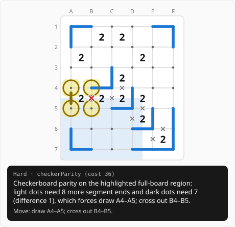
ARMORY-45 (6×7, after 12 earlier hints). Click the picture to open this puzzle in the app.
Hint says: "Checkerboard parity on the highlighted full-board region: light dots need 8 more segment ends and dark dots need 7 (difference 1), which forces draw A4–A5; cross out B4–B5."
Board modifiers & Hybrids
🧀 Swiss cheese
Cutout holes cannot be entered. Every enclosed hole lies entirely Inside or entirely Outside the loop (tap anywhere in a hole to shade it). All loop techniques — especially border rules, chokepoint, faceShade, faceCircle, and faceSlither — work naturally around and across interior holes.
🔀 Hybrids
In Hybrids books, two clue families (Masyu, Slitherlink, Mid-loop, Castle Wall, and Hamilton cycle in pairs) share one single closed loop, and every puzzle is verified to genuinely require both rule sets. Inside/Outside shading, Castle Wall rays, and Mid-loop constraints automatically combine across clue families, and the Hint button also knows these dedicated cross-family deductions:
slitherStraightCorner
A white circle or Mid-loop dot on a corner of a Slitherlink square contributes exactly one of its two corner sides, forcing the opposite sides.
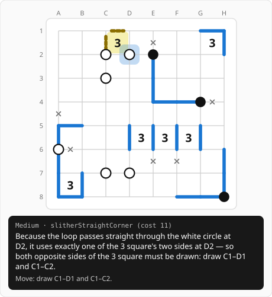
ARMORY-24 (8×8, after 12 earlier hints). Click the picture to open this puzzle in the app.
Hint says: "Because the loop passes straight through the white circle at D2, it uses exactly one of the 3 square's two sides at D2 — so both opposite sides of the 3 square must be drawn: draw C1–D1 and C1–C2."
slitherMustVisitCorner
A must-visit corner of a Slitherlink square needing one more segment with only one outside exit forces that exit on and crosses out the square’s opposite sides.
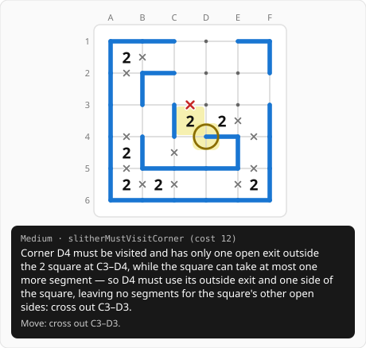
ARMORY-25 (6×6, after 27 earlier hints). Click the picture to open this puzzle in the app.
Hint says: "Corner D4 must be visited and has only one open exit outside the 2 square at C3–D4, while the square can take at most one more segment — so D4 must use its outside exit and one side of the square, leaving no segments for the square's other open sides: cross out C3–D3."
blackMustVisitReach
A must-visit dot next to a black circle with a blocked side must draw the straight segment away from the black circle, or the dot would be stranded.
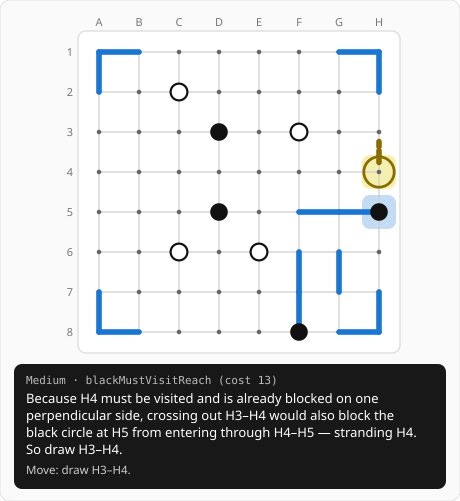
ARMORY-32 (8×8, after 7 earlier hints). Click the picture to open this puzzle in the app.
Hint says: "Because H4 must be visited and is already blocked on one perpendicular side, crossing out H3–H4 would also block the black circle at H5 from entering through H4–H5 — stranding H4. So draw H3–H4."